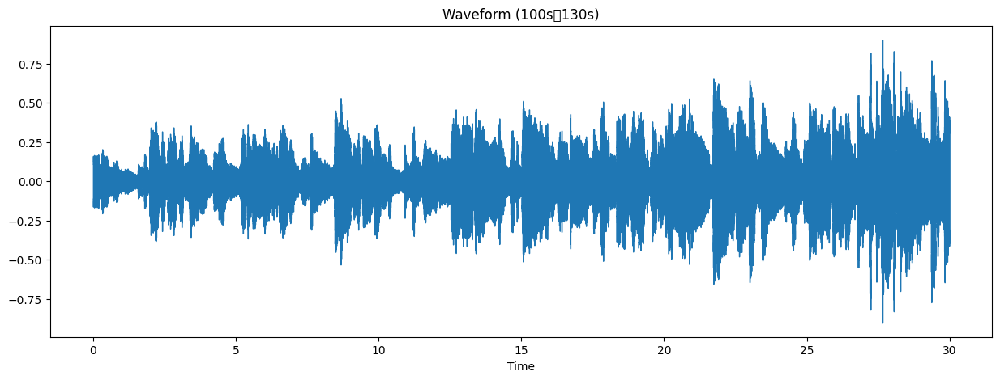
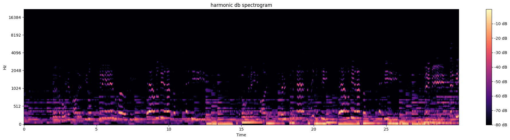
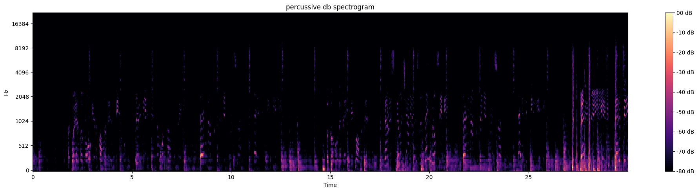
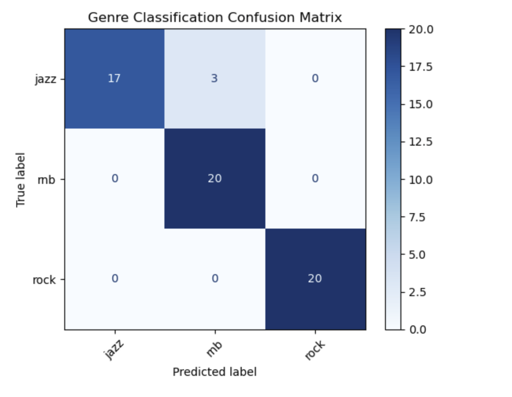

共同研究
仮配属とは、二ヶ月間配属されるゼミのため、この研究はその期間中に行いました。
本研究では The Beatles の名曲 “Let It Be” を題材に、音楽信号処理によって楽曲構造を視覚化し、その分析を行いました。
🎓 研究タイトル
音楽信号処理による楽曲分析 〜“Let It Be”の音響的構造を視覚化する〜
1. 背景・目的
音楽はリズム・ハーモニー・メロディといった複雑な要素から構成されています。これらを視覚的に分析することで、楽曲構造への理解が深まるとともに、機械学習や音楽生成の基礎データとしても活用可能です。 本研究では、The Beatlesの代表曲「Let It Be」の一部を対象に、Pythonの音楽信号処理ライブラリ（librosa）を用いて音響的特徴を分析・可視化します。
2. 使用ツール・技術
- Python
- ライブラリ：librosa、matplotlib、numpy
- 手法：
- 音声波形のプロット
- 短時間フーリエ変換（STFT）
- メルスペクトログラムの可視化
- ハーモニーとパーカッションの分離（HPSS）
- 音楽ジャンルの分類
3. 分析対象
楽曲：The Beatles – “Let It Be”
分析範囲：楽曲の50秒〜80秒の30秒間
4. 分析プロセス
-
音声の読み込みと波形表示：
音声の全体的な強弱や構成を確認するため、波形を可視化。 - 
-
短時間フーリエ変換（STFT）：
時間・周波数領域でのエネルギー分布をスペクトログラムとして可視化。 -

-
メルスペクトログラムの生成：
人間の聴覚特性に近いスケールで音の強さを視覚化。 -

-
HPSS（ハーモニー／パーカッション分離）：
和音や打楽器成分をそれぞれ分離し、音の構成要素を分析。 -  
-
音源のジャンル分け：
機械学習を用いて音源をジャンル分けする機能の作成。使用音源はweb上のフリー音源のデータ。 - 
5. 結果・考察
- ハーモニック成分：持続音や和音が強調され、楽曲の雰囲気を構成。
- パーカッシブ成分：ドラムや打音が明瞭になり、リズム構造が視覚化される。
- 可視化によって音の構造が明確になり、楽曲理解が深まった。
- 精度の高いジャンル分けの機能が作成できた。
6. まとめ・今後の展望
本研究で用いた手法は、音楽制作、教育、機械学習データ生成、リミックス解析などに応用可能です。今後の展望としては、以下のような発展が期待されます。
- 他ジャンル・他曲との比較分析
- 自動分類器への応用（ジャンル識別、楽器識別など）
- 音声分離データの生成によるデータ拡張
- たとえ複雑、難解な音楽に対しても、構造を定量的に鑑賞することで、楽曲の良さがわかるようになるかもしれない。